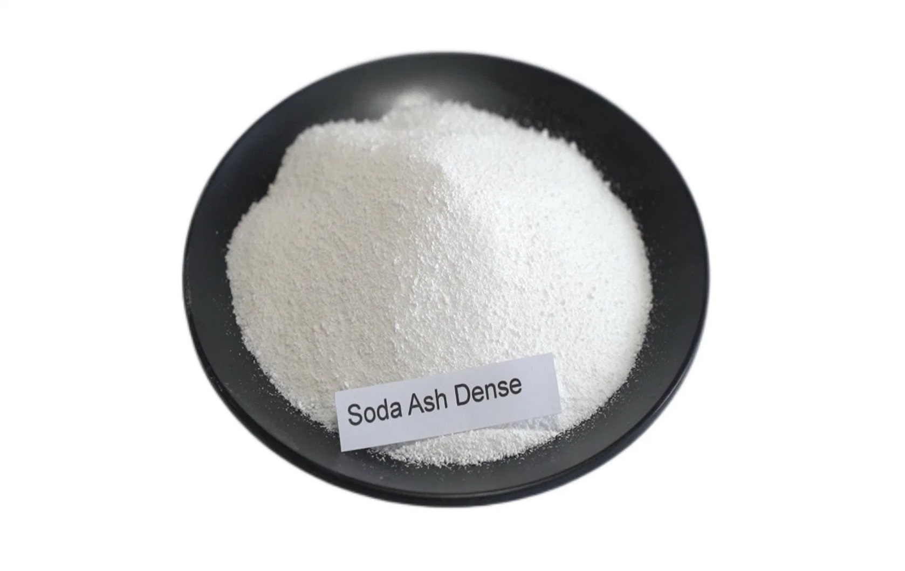

Dense Soda Ash Overview
Dense Soda Ash is a high-purity, free-flowing form of sodium carbonate used across glass manufacturing, detergents, water treatment, metallurgy, and chemical processing. It is valued for its strong alkalinity, stable handling characteristics, and lower dust generation compared with lighter grades, which makes it especially practical for bulk industrial supply.
What It Is
Dense Soda Ash, also called sodium carbonate dense or heavy soda ash, is an inorganic alkaline salt with the chemical formula Na2CO3. It is typically a white, granular material with higher bulk density than soda ash light, which improves flowability, reduces dust, and makes transport and storage more efficient. Chemically, dense and light soda ash are the same material, but the physical form is different. Dense soda ash is generally preferred where consistent feeding, lower dust, and volume efficiency matter, especially in large-scale industrial systems.
Main Benefits
One of the biggest advantages of dense soda ash is its high bulk density, which helps reduce shipping volume and improves handling in automated production lines. Its granulated structure also creates less airborne dust, supporting cleaner and safer plant operations. Dense soda ash is strongly alkaline and highly soluble in water, making it useful for pH control, water softening, and various reaction processes. In manufacturing, its consistent physical form supports stable dosing and reliable performance in continuous industrial applications.
Typical Applications
Dense soda ash is most widely used in glass manufacturing, where it acts as a key raw material and fluxing agent. It is also used in detergents, pulp and paper, textile processing, chemical production, metallurgy, and water treatment. In water treatment, it is used for pH adjustment, alkalinity control, and water softening. In detergent and chemical production, it helps support cleaning action, formulation stability, and downstream processing efficiency.
Why Choose It
Dense Soda Ash is a smart choice for buyers who need a reliable, high-volume industrial chemical with strong alkalinity and excellent handling properties. Its dense granular form makes it particularly suitable for factories that want cleaner operations, easier bulk movement, and efficient storage. While our core expertise is bitumen, we also source and supply related commodities like Dense soda ash for verified buyers.
